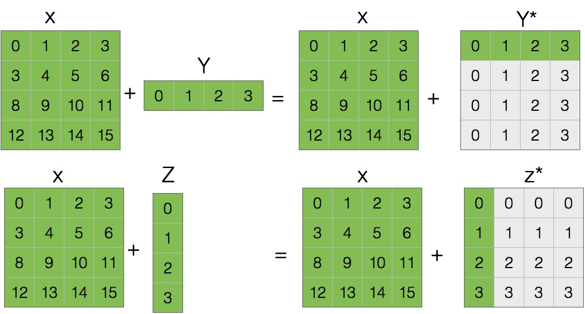
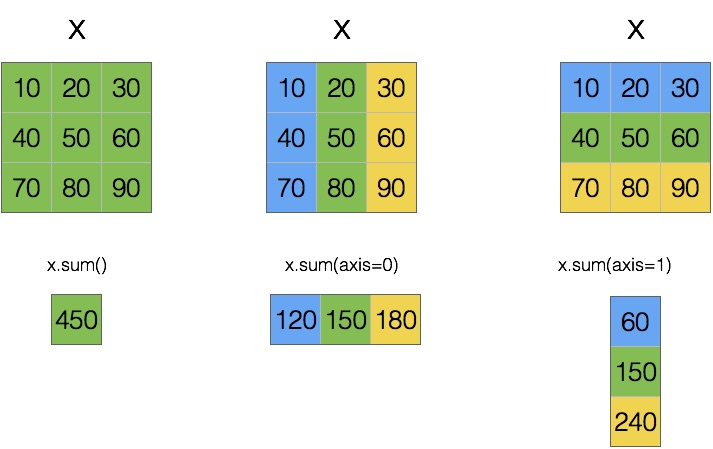

Vectorized Expressions
- The purpose of storing numerical data in arrays is to be able to process the data with concise vectorized expressions that represent batch operations that are applied to all elements in the arrays.
- Efficient use of vectorized expressions eliminates teh need of many explicit
forloops. This results in less verbose code, better maintainability, and higher-performing code. - NumPy implements functions and vectorized operations corresponding to most fundamental mathematical functions and operators.
- Many of these functions and operations act on arrays on an elementwise basis, and binary operations require all arrays in an expression to be of compatible size. The meaning of compatible size is normally that the variables in an expression represent either scalars or arrays of the same size and shape. More generally, a binary operation involving two arrays is well defined if the arrays can be broadcasted into the same shape and size.
Broadcasting
Broadcasting allows an operator or a function to act on two or more arrays to operate even if these arrays do not have the same shape. That said, not all the dimensions can be subjected to broadcasting; they must meet certain rules.
Two arrays can be subjected to broadcasting when all their dimensions are compatible, i.e., the length of each dimension must be equal or one of them must be equal to 1. If neither of these conditions is met, you get an exception that states that the two arrays are not compatible.
import numpy as np
x = np.arange(16).reshape(4, 4)
y = np.arange(4)
z = np.arange(4)[:, np.newaxis]
x, x.shape
y, y.shape
z, z.shape
To illustrate how broadcasting works, we will use two simple examples in which we will compute:
x + yx + z
In this case, you obtain three arrays with shapes:
- x:
4 x 4 - y:
4 - z:
4 x 1
There are two rules of broadcasting:
1) You must add a 1 to each missing dimension. If the compatibility rules are now satisfied, you can apply the broadcasting and move to the second rule. For example:
- x:
4 x 4 - y:
1 x 4 - z:
4 x 1
The rule of compatibity is met. Then you can move to the second rule of broadcasting.
2) The second rule explains how to extend the size of the smallest array so that it’s the size of the biggest array, so that the element-wise function or operator is applicable. This rule asssumes that the missing elements (size, length 1) are filled with replicas of the values contained in extended sizes:
Applying the second broadcasting rule

The highlighted elements represent true elements of the arrays, while the light gray-shaded elements describe the broadcasting of the elements of the array of smaller size.
NOTE:
The extra memory indicated by the gray-shaded boxes is never allocated, but it can be convenient to think about the operations as if it is.
Now that the arrays have the same dimensions, the values inside may be added together:
x + y
x + z
This is a simple case in which one of the two arrays is smaller than the other. There may be more complex cases in which the two arrays have different shapes and each is smaller than the other only in certain dimensions:
m = np.arange(6).reshape(3, 1, 2)
n = np.arange(6).reshape(3, 2, 1)
m, m.shape
n, n.shape
Even in this case, by analyzing the shapes of the two arrays, you can see that they are compatible and therefore the rules of broadcasting can be applied:
- m:
3 x 1 x 2 - n:
3 x 2 x 1
In this case, both arrays undergo the extension of dimensions (broadcasting):
m* = [[[0,1],
[0,1]],
[[2,3],
[2,3]],
[[4,5],
[4,5]]]
n* = [[[0,0],
[1,1]],
[[2,2],
[3,3]],
[[4,4],
[5,5]]]
Then you can apply, for example the addition operator between the two arrays, operating element-wise.
p = m + n
p, p.shape
Arithmetic Operations
The Standard arithmetic operations with NumPy arrays perform elementwise operations:
x = np.arange(4, dtype=np.int32).reshape(2, 2)
x
y = np.ones(shape=(2, 2), dtype=np.int32)
y
x + y
y - x
x * y
x / y
For operations between scalars and arrays, the scalar value is applied to each element in the array:
x * 2
2 ** x
x / 2
(x / 2).dtype
NOTE:
The dtype of the resulting array for an expression can be promoted if the computation requires it.
If an arithmetic operation is performed on arrays with incompatible size or shape, a ValueError exception is raised:
x
y = np.arange(3)
y
x / y
Elementwise Functions
NumPy provides vectorized functions for elementwise evaluation of many elementary mathematical functions:
| Function | Description |
|---|---|
np.cos, np.sin, np.tan |
Trigonometric functions. |
np.arccos, np.arcsin, np.arctan |
Inverse trigonometric functions. |
np.cosh, np.sinh, np.tanh |
Hyperbolic trigonometric functions. |
np.arccosh, np.arcsinh, np.arctanh |
Inverse hyperbolic trigonometric functions. |
np.sqrt |
Square root. |
np.exp |
Exponential. |
np.log, np.log2, np.log10 |
Logarithms of base e, 2, and 10 respectively. |
np.add, np.substract, np.multiply, np.divide |
Addition, subtraction, multiplication, and division of two NumPy arrays. |
np.power |
Raises first input argument to the power of the second input argument (applied elementwise) |
np.remainder |
The remainder of division. |
np.reciprocal |
The reciprocal (inverse) of each element. |
np.real, np.imag, np.conj |
The real part, imaginary, and the complex conjugate of the elements in the input arrays. |
np.sign, np.abs |
The sign and the absolute value |
np.floor, np.ceil, np.rint |
Convert to integer values. |
np.round |
Rounds to a given number of decimals. |
Going Further:
For a complete list of the available elementwise functions in NumPy, see the NumPy reference documentation
Each of these functions takes a single array as input and returns a new array of the same shape:
x = np.linspace(-1, 1, 10)
x
np.sin(x)
np.round(a=x, decimals=2)
- When it is necessary to define new elementwise functions that operate on NumPy arrrays, a good way to implement such functions is to use already existing NumPy operators and expressions. In cases when this is not possible, the
np.vectorizefucntion can be convenient tool. np.vectorize()takes a function that works on a scalar input and returns a vectorized function:
import math
def trig_func(x, y):
return ((math.sin(x) ** 2) + (math.cos(y) ** 2))
trig_func(1, 1.5)
Seems reasonable. However, the math library only works on scalars. If we try to pass in arrays, we’ll get an error:
trig_func([1, 2], [1, 2])
trig_func(np.arange(5), np.arange(5))
Using np.vectorize the scalar trig_func function can be converted into a
vectorized function that works with NumPy arrays or any array-like objects as input:
trig_func = np.vectorize(trig_func)
trig_func([1, 2], [1, 2])
trig_func(np.arange(5), np.arange(5))
Aggregate Functions
- NumPy provides another set of functions for calculating aggregates for NumPy arrays, which take an array as input and by default return a scalar as output.
| Function | Description |
|---|---|
np.mean |
The average of all values in the array. |
np.std |
Standard deviation. |
np.var |
Variance |
np.sum |
Sum of all elements |
np.prod |
Product of all elements. |
np.cumsum |
Cumulative sum of all elements. |
np.cumprod |
Cumulative product of all elements. |
np.min, np.max |
The minimum/maximum value in an array. |
np.argmin, np.argmax |
The index of the minimum/maximum value in an array. |
np.all |
Returns True if all elements in the argument array are nonzero. |
np.any |
Returns True if any of the elements in the argument array is nonzero. |
- By default, these functions aggregate over the entire input array.
- Using the
axiskeyword argument with these functions, and their correspondingndarraymethods, it is possible to control over which axis/dimension in the array aggregatiion is carried out.
The following example demonstrates how calling the aggregate np.sum() on the array of shape (3, 3) reduces the dimensionality of the array depending on the values of the axis argument:

x = np.arange(start=10, stop=100, step=10).reshape(3, 3)
x
x.sum()
x.sum(axis=0)
x.sum(axis=1)
Boolean Arrays and Conditional Expressions
NumPy arrays can be used with the usual comparison operators, and the comparisons are made on an element-by-element basis:
x = np.linspace(start=10, stop=50, num=10, dtype=np.int32)
x
y = np.linspace(start=5, stop=60, num=10, dtype=np.int32)
y
x > y
- To use the result of a comparison between arrays in, for example, an if statement, we need to aggregate the Boolean values of the resulting arrays in some suitable fashion, to obtain a single True or False value.
# Test whether all array elements along a given axis evaluate to True.
np.all( x > y)
# Test whether any array element along a given axis evaluates to True.
np.any( x > y)
- The advantage of Boolean-valued arrays, however, is that they often make it possible to avoid conditional if statements altogether. By using Boolean-valued arrays in arithmetic expressions, it is possible to write conditional computations in vectorized form.
x[(x > y)]
NumPy functions for conditional and logical expressions
| Function | Description |
|---|---|
np.where |
Chooses values from two arrays depending on the value of a condition array. |
np.choose |
Chooses values from a list of arrays depending on the values of a given index array. |
np.select |
Chooses values from a list of arrays depending on a list of conditions. |
np.nonzero |
Returns an array with indices of nonzero elements. |
np.logical_and |
Performs an elementwise AND operation. |
np.logical_or, np.logical_xor |
Elementwise OR/XOR operations. |
np.logical_not |
Elementwise NOT operation (inverting) |
- The
np.wherefunction selects elements from two arrays (second and third arguments), given a Boolean-valued array condition (the first argument). For elements where the condition is True, the corresponding values from the array given as second argument are selected, and if the condition is False, elements from the third argument array are selected:
x
np.where(x<0, x*0, x**2)
np.where(x>40, x*0, x**2)
- The
np.selectfunction works similarly, but instead of a Boolean-valued condition array, it expects a list of Boolean-valued condition arrays and a corresponding list of value arrays
# Return an array drawn from elements in choicelist, depending on conditions
np.select(condlist=[x < 20, x > 40], choicelist=[x*0, x**2])
- The
np.choosetakes as a first argument a list or an array with indices that determine from which array in a given list of arrays an element is picked from:
np.choose(a=[0, 0, 0, 1, 1, 1, 0, 0, 0, 1], choices=[x*0, x**2])
- The function
np.nonzeroreturns a tuple of indices that can be used to index the array
x
np.nonzero(x > 20)
x[np.nonzero(x > 20)]
%load_ext watermark
%watermark --iversion -g -m -v -u -d